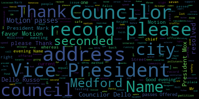
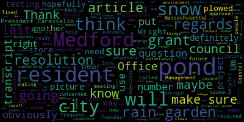
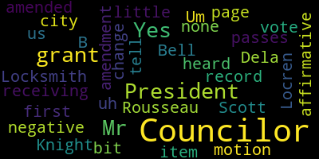
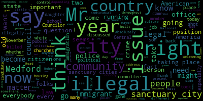

AI-generated transcript of Medford, MA City Council - Oct. 17, 2017 (Unofficially provided by MT)
English | español | português | 中国人 | kreyol ayisyen | tiếng việt | ខ្មែរ | русский | عربي | 한국인
Back to all transcripts
Heatmap of speakers
[Caraviello]: Testing, testing. Testing, 1, 2, 3.
[Capucci]: Testing, 1, 2, 3. Good? All right.
[Caraviello]: All right. Motion to revert back to the region of the meeting. Meeting is now back in session. 17-711 offered by Councilor Lococoon being resolved that the city solicitor's office looks into making sure that Rice Pond will remain open to Bedford residents only after a grant was received from the Massachusetts Office of Coastal Zone Management. Councilor Lococoon.
[Lungo-Koehn]: Thank you, President Caraviello. My attention was drawn to an article that was in the transcript last week by a concerned Medford resident with regards to us thankfully getting a grant from the Massachusetts Office of Coastal Zone Management. I think obviously it's a grant that we're going to put to good use, but the resident, and I'm sure a number of residents who frequent the pond, who fought last year to make sure it remained open to only Medford residents are now making, want to make sure that that's still going to be the case if we do accept and use this grant. I believe it's a valid question. I would assume and hope that this definitely will stay open to just Medford residents, but maybe we could get a report back. just to confirm that and to put up people residents minds at ease. I think that will be very helpful. I know we have the solicitor here right now, but I don't know if he's ready to answer such a question. I'm sure you're not ready to answer it, but thank you.
[Caraviello]: Thank you.
[Lungo-Koehn]: And before Rose called the last resolution was with regards, there was a number of people complaining to, um, the picture of the council meeting last Tuesday. And we spoke about, Council Marks and I spoke about the complaints we received and hopefully we can get that fixed and get the whole system, which we've been asking for fixed in the near future. Because for some reason, sometimes the city council meetings are not being, and no fault of anybody doing the picture, but just needs to be updated because the complaints were rolling in on Tuesday with regards to the picture. So I move approval on this resolution. And ask for my colleague's support.
[Knight]: Councilor Knight. Um, Mr. President, uh, this is the first I've heard of the city receiving a grant. Could the councilor tell us a little bit about what this grant is? Councilor Locren.
[Lungo-Koehn]: Yes. Councilor Knight. In the Medford transcript, it's a rain garden coming to Wright's pond. Um, the city of Medford is constructing a rain garden at the Middlesex fawn pond, fells pond that will help filter out pollutants, including phosphorus, nitrogen, suspended solids, and bacteria. It will also, be designed to conserve water. So it's a project they're going to do in the near future. The rain garden project will cost the city a total of $50,000 and is a match project for a $125,000 grant that Medford received from the Massachusetts Office of Coastal Zone Management. I can go into more detail, there's another few paragraphs, but it was on page A3 of the Medford transcript. The rain garden will contain plants that soak up phosphorus, nitrogen, from rainwater before it flows into Wright's Pond. I think it seems like a natural way to remove obviously chemicals from the pond, so anything we have with regards to a grant to be able to do this I think is extremely important, especially I have another resolution on where the article does mention some concerning things as well, but I think the rain garden is definitely a step in the right direction. Better the pond especially for the hundreds of kids that swim in that pond every every summer.
[Caraviello]: So One of the formation council dollar or so No one one at the moment one one.
[Knight]: Yes, and the vote is to
[Dello Russo]: remain open to residents only after a grant was received. And the solicitor will... I don't quite understand the semantics of the resolution. And I don't know if we should base our... We are waiting for an opinion from the solicitor.
[Caraviello]: Thank you. He will give us an opinion on that. Thank you. Councilor, do you want to vote on 17711?
[Lungo-Koehn]: I'll move approval of the question, Mr. President. 17711, but just to respond, I'm not really sure what the confusion is. Sometimes when you get a state or federal grant, It changes the parameters of how we operate. So we are making sure that the hundreds of families that use it from Medford, it remains only Medford. This was a big issue back about a year ago when some of the law was looked into and they were potentially going to be opening it up to non-Medford residents. the city will kind of.
[Caraviello]: Thank you. You are correct Councilor Locarno. On the motion by Councilor Locarno, 17.7.1.1. Seconded by Councilor Falco. Roll call. Roll call has been requested, Mr. Clerk.
[Knight]: Councilor Dela Rousseau. Yes. 7 in the affirmative, none in the negative motion passes.
[Caraviello]: 17 7 1 2 offered by council and go current. Be it resolved that the energy environment office update the Medford city council as to why the city does not test rights pawn for certain pollutants that could be caused by runoff of snow of plowed piles of snow near right near the pond in the winter. Be it further resolved that once the rain gun is put in place, right spawn will be tested for such pollutants before opening in the summer of 2018 council Lungo current.
[Lungo-Koehn]: Thank you, President Caraviello. I wanted to bring this up. I had a second resident email me with regards to the same article. In the second part of the article, it mentions how the city stores plowed snow on Rice Pond. And residents have grown increasingly concerned about pollutants in the pond. And then our energy and environment director said because the city City stores plowed piles of snow near the pond in the winter, which runs into the pond when it melts. This is a way for the runoff to get clean, treated, and filtered naturally. Hopefully the rain guards will help that. But it says we've tested what is there, but there's a perception that there's bad stuff running off in there. So a resident who does frequent the pond called me, also asked me to reference the article. And it is concerning that we're putting plowed snow there. So this resolution and the next has to do with figuring out if we can maybe do it another way. If we have runoff, there's a number of different things that are coming off the snow within the snow that are being stored at Wright's Pond. Maybe we should look into it more. And if this is a problem, then we can hopefully store the snow somewhere else because we want to make sure that we're keeping the pond as safe and clean as possible. I know that a resident was interested in the topic. I'm not sure if I can name him, but did reach out to the director of the Mystic River Watershed Association, who thought that piling up snow and allowing it to run into the pond is a poor choice. So I think this is just something that definitely needs to be looked into. If we have piled snow that can be put somewhere else, I think we need to do that. So if we could have a response from our Energy and Environment Office with regards to if there's been any testing, if so, what type of testing and when, that would be extremely helpful. And if we haven't, then maybe we should see how the rain garden goes once it's implemented, then potentially do some testing. That's obviously not my forte, but if we could kind of figure out what's going on here. I will be much appreciated.
[Caraviello]: Thank you. Comes along on current on the motion by council. I'm going to occur in second and by councilor Falco. All those in favor. Motion passes 17 seven one three offered by council local current. Be it resolved that the Medford city council be provided a list of all places that plow snow is stored during the winter months. Councilman go current.
[Lungo-Koehn]: Thank you, President Caraviello. If we could just have the Department of Public Works and or the administration, let the city council know where snow is, is kept. Um, when we take it off our streets, I think that just goes hand in hand with the prior resolution to try to make sure we're storing it in the right place.
[Caraviello]: Thank you. On the motion of council, the current second and by council Scarpelli, all those in favor.
[Lungo-Koehn]: Aye.
[Caraviello]: Motion passes. Motion to take papers in the hands of the clerk. seconded by Councilor Dello Russo. All in favor? Motion passes. Offered by Councilor Marks, be it resolved that the electronic speed sign be placed on Emerson Street and a 25 mile per hour sign be posted. Vice President Mox.
[Marks]: Thank you, Mr. President. I received a call from a resident on Emerson Street who said because the street is cut through, cars are speeding down and where we purchased recently two electronic speeding signs. I would ask that one be placed on Emerson street. Uh, and in addition, uh, the city has moved from the 30 mile hour speed signs to now the new ordinance, which is 25, which was enacted by this council and by the traffic commission. I thank the chief who's here tonight, uh, that, uh, additional signs be placed on our secondary roads, Mr. President, um, that, uh, alert residents of the new, uh, speed, which is 25 miles an hour. Thank you.
[Caraviello]: On the motion by Councilor, on the motion by Councilor Mark, seconded by Councilor Donnarusso. All those in favour. Motion passes offered by council by vice president marks being resolved at the sidewalk at three 49 Fulton street be replaced in the interest of public safety. Vice president marks.
[Marks]: Thank you, Mr. President. Um, this has been on the sidewalk list for some time now. And, uh, the resident asked me to, uh, try to expedite, uh, because of trip and fall concerns. So I would just ask that this be sent to, uh, Mr. Karen's and DPW in the interest of public safety.
[Caraviello]: Thank you. On the motion by Vice President Mark, seconded by Councilor Dello Russo. All those in favor? Motion passes, offered by Vice President Marks. Be it resolved that the rodent issue in North Method in Wellington be distressed. Vice President Marks.
[Marks]: Thank you, Mr. President. Residents are probably aware on the Somerville Method line in South Method, there's been an issue for a number of years with rodents and the city embarked upon a program which monitors and sets out traps in particular areas, and now I'm receiving complaints in the Wellington area, some of which may be due to the bridge construction that's going on and some of the other development, but I've been getting a number of complaints of rodents in the Wellington area, and just recently I received two phone calls on north Medford up at the top of the heights where they're seeing rats in the area, Mr. President. So I would ask that the city immediately set up some type of monitor or activity to try to nip this in the bud, Mr. President.
[Caraviello]: Thank you, Mr. Vice President.
[Dello Russo]: Councilor Dello Russo. Mr. President, I resent the fact that South Medford has been singled out as a place for rats. Secondly, I want to thank always the Department of Public Health, which has been proactive over the years in an urban area where rats are part of the landscape, but that does not mean we have to suffer their incursions. So thank you to the Board of Health. We've suffered an uptick in their activity over the summer months because of some of the work done on the Green Line Extension Project, Mr. President. It is no doubt that the work done in the Wellington area has certainly moved some of them, and that may be exacerbated as we're entering the winter months and our little furry friends are looking for a place to bed down for the winter. So I hope that the Board of Health will not only exercise their own discretion in this matter, but urge the contractors in the area who are required to bait and monitor to step up their efforts. Thank you.
[Caraviello]: On the motion by Vice President Mox, seconded by Councilor Dello Russo. All those in favor? Motion passes. Offered by Vice President Mox, be it resolved that the construction equipment left on Mangle Street be removed in the interest of public safety. Vice President Mox.
[Marks]: Thank you, Mr. President. There was some road work done on Mangles and that surrounding area and some construction equipment has been left alongside the road for a period of time and residents are concerned and would like to see the equipment move, Mr. President.
[Caraviello]: On the motion by Councilor Marks, seconded by Councilor Dello Russo. All those in favor? Motion passes. Offered by Vice President Mox, be it resolved that a pedestrian crossing button be added to the blinking lights at the corner of 9th Street and Middlesex Avenue. Vice President Mox.
[Marks]: We're probably all familiar with this particular intersection at 9th and Middlesex. It's right at the entrance to Cappy's on Middlesex. And some time back, the council actually pushed our state delegation to get a working blinking light. We tried to get a full set of lights there, but we were instructed by the state, because of the proximity to the intersection of Wellington, that that wouldn't be feasible by the state traffic engineer. And now I'm asking, Mr. President, if anyone has ever had to traverse there, they'll realize that the light blinks, but no one stops. And to get across, you're taking your life in your own hands. So I would ask that this be sent to our state delegation where Middlesex is a state road, requesting that the addition of a pedestrian crossing button be added to the blinking set of lights. Thank you, Mr. Vice President.
[Caraviello]: On the motion by Vice President Mox, seconded by Councilor Dello Russo. All those in favor? Aye. Motion passes. Offered by Vice President Mox, be it resolved that the Carr Park parking lot receive a speed bump and a slow down parking lot signs. be installed. Vice President Mox.
[Marks]: So, Mr. President, this Saturday I was at the car park and I had a number of residents that were attending a birthday party in the taut lot come up to me and said, do you realize when you're coming up Fulton Street that you where the street branches off that there's no indication that you're going into an actual parking lot, which is car park and cars are still going at the same clip as if they were on Fulton Street. And it really is a very dangerous situation. Um, their suggestion, which I think is great. And I know we have the chief here, uh, would be to put at least some, uh, warning signs that you're entering a parking lot. This is no longer a road. And secondly, uh, I'd like to see a race crosswalk, but I know we have those, uh, movable, uh, speed bumps that the city is putting around the community, uh, in a way to chief, would you mind coming up? We'd like to put you on the spot chief.
[Caraviello]: Um, chief name, the address of the record, please.
[Sacco]: Leo A Sacco, jr. Two 27 Elm street, Medford chief of police.
[Marks]: Just if you could address, do you know what I'm talking about when you come up?
[Sacco]: Yes.
[Marks]: Is, is there a way that we could kind of address maybe some signage and possible speed bump? I know race crosswalk is expensive,
[Sacco]: Yeah, the raised crosswalk issue is somewhat out of my control. We can recommend, but we can't force it to happen because of the cost factor. Of course, the temporary speed bump is doable. I'll speak with Mr. Kevins to see if there are any available. Signage is the simple thing. We can post that area that technically there's no outlet. when they go straight and a lot of times when cars are coming straight up Fulton, they just go straight and they think they can connect with the rest of Fulton and they can't. Right. So posted at that end and then, you know, the, the speed limit, the posting for, uh, uh, children playing playground. That'd be great. So those, the signage piece is simple. The other pieces of the crosswalk, the speed bump, uh, takes a little more effort.
[Caraviello]: Thank you, chief.
[Sacco]: Thank you, chief.
[Caraviello]: On the motion by vice-president Mark, seconded by Councilor Dello Russo. Mr. President, that this be sent to the traffic commission. Um, and now the chief is going to have that be sent to the traffic commission on the motion by vice-president Mark, seconded by Councilor Dello Russo. All those in favor. Motion passes. Petitions, presentations, and similar matters. 17 seven zero nine petition by John Sterola, 20 Metcalfe Street, Medford to address the council. on how to serve the people of Medford. Name and address for the record, please.
[John Storella]: John Stirola, 20 Medcock Street, Medford, Massachusetts. Thank you, Mr. President, and thank you, Councilors. Very happy to be here.
[Caraviello]: It's always a pleasure to have you here, Dr. Stirola.
[John Storella]: Well, I appreciate that coming from you. Thank you. Thank you, sir. And I do want to ask the audience if I'm too loud or not. Can you hear me clearly? uh, I have problems with hearing to him. So, uh, I also want to, I want to thank city clerk at Ed Finn for providing me with this hearing aid. That'll help very much. Well, anyway, my subject tonight is how to serve, uh, the people of metric. And of course, we're all very interested in that because that's the purpose of government service. We wouldn't need government at all if we did not need service. And so, The city council here takes an oath to support the Massachusetts constitution and that way to serve the people of the Commonwealth. The council is to be appreciated for this loyalty to the people and we, the people have faith that the council will serve the people and that this is the reason we vote to elect you and we express pride in your service. and we trust you to do your job because of what we think is in your hearts. We think that in your hearts is the desire to make life less painful and more comfortable for us at a reasonable cost to us. We the people support the city government by paying our taxes as the government ordains. And we give up some of our precious liberties, and we trust that the government will spend our hard-earned money wisely. But does it? In my opinion, Medford is near insolvency. Now, notice I say near. I hope I am wrong, but the very tight financial condition of Medford will not permit us to proceed with the police station. the fire station, the library, school building maintenance, infrastructure, pension funding, proper zoning in order to limit density, preserving neighborhoods, reducing park fees and parking permits, street cleaning, police foot patrols, Medford Square revitalization, payroll increases for our employees, removal of tree stumps, on and on. Medford would have to borrow many millions of dollars to pay for all those needs. We already have a debt of $51 million, which we reduce at a cost of $6 million a year, but we need $22 million for the police station alone. Taxes must be raised year after year as they have been for the past 30 years in good times and in recessions in order to keep our heads above water. And now the city is taxing the taxes we have already paid and it is using the community preservation act to do this. Our tax levy is at the very top limit, which proposition two and a half permits. which is $109 million this year alone, which is $4 million more than last year. Now add to that $4 million more the $1 million CPA surtax, and we have a 25% increase over the increase. Confusing, isn't it? But CPA supporters love the extra revenue. which takes from Peter to pay Paul. Our city government is averse to charter review, which has not been discussed in 30 years. We have a charter which gives power to a strong mayor and a weak council. No offense. Our city government is averse to term limits, which will provide more democracy for the folks. Two terms were adequate for George Washington, for Thomas Jefferson, for James Madison, for James Monroe, and Andrew Jackson, et cetera, et cetera. And two terms should be enough for us. In the Federalist Papers, James Madison said, a republic is a government which derives all its powers directly or indirectly from the people. and is administered by people holding their offices for a limited period. James Madison wrote that in 1788. Are our civil servants insecure? You bet they are. For what other reason would they seek public office over and over again? I wish the mayor and the council could shed their insecurities. Incumbency is selfish. Have you noticed how the promise of increased revenue makes incumbents ravenous? They should feel secure in their ability and power to give of themselves outside of politics. Yes, to give. Now, there is the way to serve the people of Medford. The incumbents must get out of the way. We have one mayor and seven councils and they stay for many, many years. Each Councilor is paid $30,000 a year, which is more than $750 for each meeting like this one. But we have 36,000 registered voters and many of them would be happy to serve without compensation. Why? because they are, by nature, generous people. We must urge our voters to vote out the career politicians, to drain the Medford morass, and to vote in the outsiders, because the People's City Council, now listen carefully to this, has been co-opted by the school committee. Yes, as I see it, the school committee infiltrates and then runs the city council. This is a case of the tail wagging the dog. Let me explain. The mayor is chairman of the school committee and is compensated for that position in the school committee budget. A majority of the city council has connections with the school committees. Some have relatives on the school payroll now. and another school committee member may be elected to the city council this year. Having finished seventh in the primary elections, the city council votes to accept the school budget as it is presented by the superintendent schools and the school committee each June of the year without making any significant changes. We just don't know where the school committee ends and the city council begins. No one favors education more than I do. All of my fulfillment and the fulfillment of my four children is due to education. But our school committee, which also rules the city, does not educate. The school budget compensates all of them very, very well. The cost to the city of Bedford is probably $13,000 a year for each enrolled student. That's very high. And yet, the record is regrettable. Our next generation must be saved. We must serve all the people of Medford. We must vote out the incumbents. Thank you very much, Mr. President.
[Caraviello]: 17714 petition by Robert Penta, Zero Summit Road, Medford, Mass, to address the council on the issue of becoming a sanctuary city. Before Councilor Penta, I'm sorry, my former councilor gets up, I'd like to read something that the city council passed unanimously in November of 2016. Dear Mr. President and city councils, Whereas, the strength of our nation is derived from its history of diversity that has enriched our communities with a variety of cultures, faith, traditions, and viewpoints. And whereas, the city of Medford is a community that welcomes and values the varied racial and ethnic makeup of our residents. And whereas, the city of Medford stands in support of all immigrant groups and newcomers as they pursue the American dream. And whereas, the city of Medford will work to model our city as a safe and welcoming place that equally encourages all to speak, seek personal advancement, and to reside in peaceful consentment and method, and the safe method rejects all words and acts of hate, indifference, and intolerance that undermine our neighbors, community of faith, and our schools, and thwart the promise of equal justice. Whereas our nation was founded on the fundamental principles that all persons are entitled to equal protection of law, equal opportunity, and the enjoyment of civil and human rights. Now, therefore, the city of Medford proudly supports the Medford Conversations Project to promote dialogue and the collaboration of race in Medford and beyond. And signed, Mayor Stephanie Burke. And this was passed on a seven to zero, Motion by the City Council. Name and address for the record, please.
[Penta]: Robert Penta, Zero Summit Road, Medford Mass, former member of this August body. I come here to address the City Council on this important issue that has important but different consequences depending on what side of the issue that you might be on. At the outset, I want to address and thank Curtis Tooden for propelling this issue. before our citizens of the city of Medford. Since this is an election year and we're all running for office, those of you that are and those that might be candidates running for office, boasting about all the wonderful accomplishments and the hard votes that you had to take. To me, this is a very important issue and I think it's an issue that needs to be presented and discussed and to have everybody, including the mayor, the city council and the school committee take a position on this issue. Because isn't it weird, when we think about our America today and you see all the things that are taking place, whether it's before the National Football League or Little Pop Wanna Kids, the use of our American flag, the national anthem, seems to be at issue. And our culture seems to be at issue. But where are we going with all of that? I don't know. You know, Sanctuary City's had its beginning here in the United States back in the 1980s. Central folks, central people from Central America left their country looking for political refuge because of the oppressive nature that was taking place. And what took place here in this country, and the churches, many of the churches throughout this country, they took these folks in, believing them to be in need of help, and for which we did, we helped them out. But that sort of like has morphed itself since 1981 to what it is today, addressing itself to sanctuary cities. And as a result of sanctuary cities becoming what they are and having a different interpretation, you, Mr. President, just read something that was dated November 21, 2016. If you go to that third whereas, it says the city of Medford stands in support of all immigrant groups. I think the word before all an immigrant should be legal. All legal immigrant groups. Because we, the people of the United States, are a nation built on laws. Its foundation is built on laws. And it's on the legality of what we do each and every day. And it seems, and it seems that because of all this illegal immigration that is taking place in this country, you know, have we as a country now forgotten the fact or gotten to the point where everybody has a right We're giving everybody rights, but nobody wants responsibility. But the responsibility that's being borne each and every day is the Mr. and Mrs. America, Mr. and Mrs. Medford Taxpayer. You know, I cannot think of any prouder comment than something that's written on the banner of the VFW of Mystic Avenue. It says, all lives matter. Everybody's lives matter. White, black, blue, green. I don't care what nationality you are. If you're here in this country and you're here legally or you have the proper legal documents earning your way to become an American citizen, your life matters. And for those folks that come here illegally, that's in and of itself the question that's before us right now. You know, We as a community are very generous to so many people. You members on the council, especially your two new members, Councilor Scarpel and Councilor Falco, you've just gone through two years of community block grant funding. And if you go through each and every one of those community block grant fundings, you will see the amount of money that's been dedicated and prioritized to charities within not only the city of Medford, but in the Tri-City and outside the city of Medford. You've also seen monies go to legal, council, for people who have an illegal immigration condition needing to get itself resolved and coming forward. We also have in this community all our churches and all the food pantries and the shelters taking care of as many people as they can. And while they're doing that, the question then becomes, who comes first, the illegal or the legal? And I think a sanctuary city, in and of itself, presents that particular situation. Like I said, again, depending on what side of the issue you're on. Sanctuary cities throughout this country, and there's 200 of them right now, that bar the use of government resources to enforce federal immigration laws. And they also allow illegals charged with crimes to be released without notifying federal authorities. Now, in a report that was submitted in December of 2014 to Congress, It stated that more than 30,000 convicted criminals have been released by ICE at the end of 2014, and they have gone back to the states, to the cities and towns that they came from. But inclusive of those crimes, there was 173 homicides, there were 373 sexual assaults, there were 186 kidnappings, and there was 1,000, excuse me, there was 14,014 drunk driving charges to individuals that did not have a license. There were more than 30,000 convicted criminal citations issued during that time. What does that say to the law abiding citizen? But more importantly, what does that say to law enforcement personnel? who especially now, if you're in a sanctuary city, you can't ask for identification as to are you an immigrant or not, you can't hold them, you can't call ISIS, excuse me. It has a ramification that just really says to the police officer of today, beside doing my job for the city that I'm in, I am now having to become aware of somebody who might be here illegally. And that person might get preferential treatment over someone who might be illegally, but that I can arrest and imprison. And that's really not right. There's a particular case that takes place from a gentleman and his two children that died. He came from Lavon, Texas. And he was hit by an illegal immigrant who hit him head on in a collision. And he killed him, his four-year-old son, and his 22-month-old striped out his four-year-old daughter and his 22-year-old son. The illegal person was arrested and plea bargained to a two-year sentence, a two-year sentence for wiping out a husband, a father, and a daughter. The woman subsequent to that has had some kind of public, how could you say, retaliation because she felt that the justice system didn't do her right, because she complained because of that. And the person that killed her husband, her daughter, and her son was Hispanic. She now becomes the culprit and not the victim. These are just little nuances. We can go to the entire country. There are cases where police officers have been killed, shot, brutally murdered by illegal immigrants here in this country. And that's not right. Absolutely not right. When we think about what's going on, illegals, they have the benefits of our free medical system. They go to our quality schools. They get free housing and free food. But they don't choose to blend in by learning English and assimilating to our American culture. And further, by committing crimes outside or inside the community or the state that they're in, It adds a definite cost to our police, to our public safety, to our public education, and to Mr. and Mrs. Medford and Mr. and Mrs. America. So the question then becomes, on a sanctuary city, you folks are running for office. I haven't seen one of you yet say or put anywhere in your literature, just one gentleman so far, he's in the back of the room, made the point that he is for sanctuary cities. I commend him for it. He took his position. It's a very important issue to be discussed. Because if you're telling me that you're abiding by this November 16th, strike that, November 23rd resolution, well this smacks of all the ingredients of a sanctuary city. Either we are or we're not. And I think you Councilors and every candidate running for office needs to take that position. And the reason why they need to take that position, whether you're for or against, in a common, level-headed society, while we don't have to agree, we can respectfully disagree. And that's where I think we need to be going here in this community. You know, when you say we're a welcoming community, as a matter of fact, there's a billboard coming in on Route 93. It says we are a welcoming. We've always been a welcoming committee. We've got the third largest black population in the Commonwealth of Massachusetts, and we've had it for years. And slowly but surely, they're leaving because nobody can afford to stay there anymore. The cost of housing in this community has gone completely out of control. Makes no sense at all. And if this present administration keeps wanting to put housing all over the place, and if this council doesn't want to review zoning, that's what's going to happen. You can have a city so out of control, you're not going to be able to understand what's going on. And Dr. Stirella was right. Your finances will be so out of control. And if you add a sanctuary city to the mix, then please explain why you're doing it. And please let the people know as a candidate for office, that a sanctuary city, you're either for it or against it.
[Caraviello]: Mr. Panto, we're running, you're running over your time. That was a lot. I think this is a very important issue. You know, we have a 10 minute timeframe. Okay. There are other people that would like to speak.
[Penta]: I think the bottom line, my comment would basically, I don't think any city council, any mayor, any school committee person or anyone, should tell a police department how to do their job, especially whether they're legal or illegal. That's their job to protect and to serve, and not to be controlled by a political hierarchy in a community that turns around and says, we want to be a sanctuary city.
[Caraviello]: Name and address of the record, please.
[Tudin]: Hi, my name is Curtis Tudin. I live at 340 High Street, Medford, Massachusetts, and I'm here to speak in support of Medford pursuing sanctuary city status or any initiative that makes it clear that this is a community that is welcoming and safe for all residents, regardless of immigration status. So there is a lot of reasoning behind that. It's I also agree that it's an important topic that people need to take a stance on. I commend the City Council for their statement from last November. It definitely got a point across that you were trying to make. I commend the mayor and the police chief for expressing and assuring me in different conversations and other residents that Medford doesn't practice the tactics that are what sanctuary city status tries to address. But all of that is great to practice, but it's one of those rare problems where we actually have to preach what we practice. So that shouldn't be too difficult. If we're already a city that does all these great things, we need to be clear in stating that we are a sanctuary city status or we are a safe community, whatever the title may be, it's up to the community to decide that particular label. But we need something that's clear so that all residents in the community can understand it. Specifically, as an employee of Bedford Public Schools, I see on a regular basis when immigrant families come into the building and because they don't speak English, And because of the culture of fear that is added on to by all the statistics that were read, even though it is documented that immigrants commit crimes at lower rates than ordinary legal Americans, every day these families come into the Medford Public Schools and they're afraid to make eye contact because they don't know where that may lead, whether it's with an authority figure or with a teacher or anybody, even another student. I wish, as someone who doesn't speak another language, that I could hand them a piece of paper in any language that clearly explains that being part of Medford Public Schools is a right of all students and that in this building, or really in all city buildings, you shouldn't feel discriminated against or in danger in any way, whether that's in a classroom or talking to a police officer or talking to a firefighter, going to an emergency room, all these essential aspects of just being a human being that a city should be able to provide without a culture of fear that is unfortunately sweeping across the country. So for Medford to stand up and label itself what I will ultimately see as the right side of history, then I think now is the appropriate time to do so. So thank you for listening and I appreciate everybody coming out and contributing to the conversation.
[Caraviello]: Name and address for the record, please.
[Wolfson]: My name is Kevin Wolfson, 159 Central Ave. Thank you for welcoming the public and the chance to speak. I'm a participant in a group called Safe Medford that many of you have heard from. The mission of our group is to advocate for all people in Medford, regardless of their immigration status. And I know many of you, I hope, have seen our website, safemedford.org. If you haven't, I hope that you will take the time to look through it. And you'll notice that we don't use the term sanctuary city because it is often connected to statistics like Mr. Pinto was citing, and this sort of kind of building of fear that is not what we're about, not what we're intending, and that we feel distorts the issue. So the term that we use is safe communities, but regardless of what the term is, our goal is to pass a set of policies, and these are policies that are used across the country. that are supported by police organizations and sheriffs across the country that clarify how the police does and does not work with federal immigration. The Homeland Security Department, which is what ICE is part of, is, if I recall correctly, the second largest, second most heavily, second biggest funded It's either second or third in the entire country. They have no lack of resources. They are extremely well-funded. They have all of the money they need to do the work that they are supposed to do, and that all of us will agree is important work. The Medford Police Department, the city of Medford, clearly from statements of people so far tonight, clearly is not nearly as well funded. The Medford Police Department doesn't have enough police officers, according to many people, and I have no doubt about that. Police station itself is in disrepair, and I know that there is the welcome push to build a new police department. And a large part of why we're asking for what we're asking for is so that the limited resources of Medford are co-opted by a very well-funded national organization. It's about protecting, in one way, about protecting Medford's rights to be an independent community that decides what to do with its own resources. That's one thing I wanted to point out. The other thing that I wanted to point out is the discussion of legality and illegal and legal immigrants and that sort of thing. I want to point out that immigration offenses are civil offenses. They are not criminal offenses. And I think that's a really important point, and I think it's a really important point at various stages of immigration documentation, not being treated like criminals for what is a civil offense in the same way that a speeding ticket is a civil offense. Like Mr. Tootin just said, immigration status has no correlation to people being more violent. There are plenty of ways that you can pick statistics that make it seem like that's the case, and it's not the case. And again, I hope you'll look at the safemethod.org website where we explain that more clearly and more thoroughly. Finally, I want to point out that cities that have these policies—I mentioned earlier that police organizations and sheriffs across the country support policies like this—cities that have these policies are economically stronger, they are statistically safer, And the reason for that is that people who might be at risk of being targeted by ICE don't feel like they're afraid to call the police if they see a crime or if they are a victim of a crime. And that makes all of us safer. So again, thank you for the chance to speak.
[Caraviello]: Thank you.
[Statt]: Maria Statt, 122 Boston Avenue. Good evening. Thank you all for the opportunity to be here, and thank you for serving. This is a service. I'd like to give you just a few facts. I am a lifetime member of the NAACP. I am a member of Safe Medford. Before I give you four facts, I want to say that my husband was an immigrant, and my in-laws were immigrants, and the thought of my child coming home from school one day and her grandmother or her dad not being there is insane. Less than 3% of 11 million undocumented residents have been convicted of felonies compared to 6% of the general population. Undocumented residents are ineligible for programs like SNAP and TANF and non-emergency Medicare, yet they pay into our social security system. It's true, some new immigrants, newly arrived immigrants do go to our public schools, but second and third generation immigrants stimulate our economy. Unauthorized people, undocumented people, pay about $12 billion a year in state and local taxes. And this is cited from 2015. Immigrants with little English and limited job skills do the jobs that Americans often don't want to do. We are a richer society when we are an inclusive society. And I really want people to seek understanding, and then to be understood. There is a difference between undocumented individuals and criminals who have broken federal and state laws. Thank you.
[Caraviello]: Thank you.
[Capucci]: Name and address for the record, please. Thank you, Mr. President. I'm Robert Cappucci of 71 Evans Street. Over the centuries of this nation, we've always welcomed immigrants to the United States. Me, personally, I encourage more immigration to the United States, especially if it's from countries that oppress their people in any way. But we do have a supreme law of the land, and it is the U.S. Constitution. And under the U.S. Constitution, there are laws that govern how one becomes a citizen of the United States. For a city to automatically dictate what the police can or can't do in terms of immigration questions undermines the very reason it makes this country good to come to. You're subverting the Constitution. which for centuries has helped a lot of people come from impoverished or oppressive nations to come here and build a much better life. One of the things I want to talk about is the cost of illegal immigration. While it's true that the last speaker said it's something like $12 billion that they're putting back into the economy, at the same time, a year, it's $135 billion that's coming out for the cost of illegal immigration to the United States. On the state level, among the 50 states, it's $88 billion a year. At the federal level, it's $45 billion a year. So the costs coming in don't— even come close to the cost going out in terms of prison upkeep, schools, hospital, all sorts of things that these costs rise on. I don't think that for a city like Medford, for a group like Safe Medford to come along and, you know, this has nothing to do with building fear or anything else. It's a matter of respect for the law. in becoming a citizen of the United States. It's an affront, in my opinion, to the many millions of people who have come here the legal way, to all of a sudden just basically grant amnesty, which is essentially what this is, by dictating to the police that, quite frankly, I don't think the city council has really the experience to tell police officers what their policy should be. And under the guise of the feel good appeal to the emotions of making Medford a welcoming city, like Mr. Penta said, we've always been a welcoming city. I'll leave you with this question. Is Medford being a welcoming city by basically subverting the rule of U.S. constitutional law by not enforcing it, by policy, or would we be a welcoming city by doing something very simple that this city does not do? When a new resident or a new business comes to this city to open shop or to live here, Medford does not send them a welcome packet saying, here's where Wright's Pond is. Here are some discount coupons to the Chevalier Theater or to Carol's Restaurant. Here are the city services. Here's when we pick up trash in your neighborhood. That's a welcoming city? It's not. But circumventing the laws governing immigration under the U.S. Constitution is? I beg to differ. Thank you, Mr. President.
[van drop]: My name is Rachel van drop I live at 19 Fulton Street. I am a part of safe Medford and I've also been a part of the people power as well. And I would just like to clarify that we have not been dictating what the police should be doing. We have been asking them to put their current policies in writing so that that can be used to ensure people that they are not going to be treated in such a way. We're not saying do this. We're saying we appreciate that you are doing this as things are. Please put it in writing so that it can be clarified. Thank you.
[Munir Jirmanus]: Good evening.
[Caraviello]: Name and address for the record, please.
[Munir Jirmanus]: I'm Munir Germanus. I live at 3 Summit Road, and I appreciate the opportunity to address this group. I am a naturalized citizen. My wife and I became citizens primarily because we happen to be well educated. We both have PhDs. So it was very useful for various businesses to work and hire us. There are many immigrants who unfortunately don't have that luxury. And I think basically welcoming means welcoming for all and not welcoming just for the educated. So I personally am quite in favor of having Medford and actually all of Massachusetts become a sanctuary city just like the state of California. And I would certainly urge all candidates running for office, including you, ladies and gentlemen, to do the same. Thank you.
[Caraviello]: Thank you. Thank you. Name and address of the record, please.
[Ilene Lerner]: Eileen Lerner, and I live at 9 Adams Circle in Medford. For all of my adult life, I have worked with immigrants. The past 25, I've been teaching English to adults. I agree it's a good idea for immigrants to speak English. Where are the programs? Where is the money? people come here, they have to work hard to support their families, you know, and often they don't have cars, and they're maybe working two, three jobs, and they don't have the time to learn English. Sometimes when people are laid off from jobs, they get So they get unemployment compensation. And part of the deal for that is that they take English classes. I've had those kind of people, women who have been in this country for 25 years, never learned English because they didn't have the opportunity. They didn't have the time. They didn't have the money. But when they were given it, they were so, so happy. to learn English. So if we want people to learn English, we have to put more money into programs to teach them English, you know? And also, you know, talking about immigrants and criminals is so deceptive because Immigrants and undocumented immigrants have a much, much lower rate of crime than American citizens do. Most of them are just too busy trying to survive and doing lots of jobs that Americans don't want to do. And who is it who decides who comes into the United States? Isn't it a bunch of white men with privilege and power and money? You know, who says that a woman from Honduras who's fleeing domestic violence and gangs can't come in?
[Caraviello]: Can we keep it down in the back there? Someone is speaking. Thank you. I apologize.
[Ilene Lerner]: That's OK. And to talk about the flag. But not to mention slavery, the legacy of slavery that we're living in. To talk about disrespect to the country when we're not talking about all the numerous black people that we've seen slaughtered by white racism, by white supremacy. And when people object to that, when people stand up and say this is wrong, or they take a knee or they protest, then the issue becomes the flag and not discrimination, not unjust killings. It's so deceptive. You know, my grandparents came here from Poland. I wouldn't be alive if they hadn't been able to come here I appreciate the United States so much, and my life, and the life of my children, my grandchildren, and my new great-grandchildren. And I want the same rights for other people. I've met these people. They're good people. They contribute to our country. They do a lot of jobs that other people don't want to do. I recently had hip replacement surgery. And who were the people that were taking care of old people in this country but immigrants? And believe me, I didn't ask them if they were documented. I didn't care if they're documented or they're undocumented. I'm glad they're here. I'm glad they're safe. I'm glad they're contributing to our communities with their skills and their money. I mean, right now, we've had an instance where down on the Cape, they had trouble staffing the hotels and the restaurants, right? And people lost money down there because they didn't have enough immigrants like they used to have. And in California, they're having trouble getting people picking the fruit and the vegetables, right? You know, you may want to call them illegal or whatever you want to call them, but they've done a lot of work for our country, and they haven't been treated fairly a lot of times. And I just want to stand and say, I support these people. I think they contribute to our economy and to the richness of our culture, which isn't only white and Christian, but is multicultural. Thank you.
[Caraviello]: Thank you. Good evening. Name and address of the record, please.
[Hicks]: Joanna Hicks, 15 Talbot Street. I'm a fourth generation Japanese American and Filipino on my mother's side. And some of you may know during World War II, Japanese Americans were incarcerated, 120,000 of them, just on the basis of their national origin. Some of the men of that generation went on to serve for the in the armed forces and became the most decorated unit in World War II, sent into some of the most dangerous missions. And I wanted to support safe communities in Medford and speak out that immigrants, including undocumented immigrants, serve this country in the military as well as contributing to the economy. Thank you.
[Caraviello]: Thank you. Good evening. Name and address of the record, please.
[Graves]: William graves, 69 Stanley Avenue. Uh, I'm also a member of safe Medford. And, uh, in addition, I'm a, I'm an immigration lawyer and I've been practicing immigration law for about 20 years. Um, I think that having Medford become a safe community and declaring itself a safe community is, is a good idea. And I think it promotes safety in the community. I don't think it subverts a lot. It certainly doesn't subvert the federal law in any way. Um, immigration law, isn't really constitutional law. It's statutory law. Congress basically has the power to make laws governing immigration, and it's enforced by the executive branch. It's primarily civil law, as Kevin had pointed out earlier. Not much of it is criminal law. So when people are here without documentation or expired documentation, they're here in a civil violation, not a criminal violation. In, in recent months I think the climate of fear has greatly increased and I certainly see this in my practice. I see, I get calls from parents who are afraid to send their kids, their US citizen kids to school because they're afraid that they may be questioned about the immigration status of one or both of their parents. And you know, I try to let them know that that's not the case and that won't happen. Um, People are afraid to go out and I think that people are afraid to call the police when they're a victim of a crime or if they witness a crime. They're afraid to come to city hall to complain about a landlord. And I think that creating a safe community and Medford declaring itself a safe community will make all residents, all members of our community, the people with whom we live, to feel welcome and to feel welcome to communicate with the police or with the city. That's all I have to say. Thank you.
[Caraviello]: Thank you. Records, the meeting of October 10th. Name and address of the record, please.
[Tannenhaus]: Rachel Tannenhaus, 26 Pearl Street, please. Hi. My name is Rachel, and I am the granddaughter of refugees. And yes, I am in favor of Medford being a sanctuary city. So y'all can get a head start on the snarking now. And my grandmother, who is 97, came here as a refugee. And I don't know, or I haven't really asked whether or not she got here legally, because I don't care, because I'm pretty happy to be alive, and also Hitler. Frankly, if people are escaping genocide, I think that really that is a situation that I don't get to do a lot of judging about. Now, I'm pretty sure that there are a number of people in the room who have studied their history. So if you have done so, then you know that much of the rhetoric around immigrants today is very, very similar to the rhetoric around Jewish refugees in the 1940s, late 1930s, early 1940s, really, really very similar, talking about crime rates, talking about loyalty to the country. talking about who are we really letting in, talking about who's a real American. And I just want to make that really clear that a lot of people, some of whom are relatives of mine, died because of that sort of rhetoric. I'm not really interested in a community where we let that happen again. One of the things we talk about, one of the things that we say is never again. And I really feel that as a member of a community who, you know, Every few years or so, somebody pops up and tries to wipe us out. We've gotten really good at looking out for this kind of thing. Real good. We know it when we see it. And I also feel like there have been some logical fallacies that have been going on here. For example, if you're really excited about the statement that all lives matter, then you have to believe that all lives matter. And the question is, do they? Or is it just the people that you decide matter? Um, you know, you can't say all lives matter and then in the same breath say, but not yours, not these, these do not have, um, these can't be safe here. I also agree with the statement that, um, you know, obviously God forbid somebody in this room gets attacked or robbed or, or anything like that. And there is a witness who is undocumented. You're on your own under these current circumstances because, They're not going to get sent back to a place where somebody's trying to wipe them out. And I should point out, by the way, that in my family, nobody ever asks my family if they are here legally because they pass because they're white, and nobody cares, and nobody stops and checks you if you're white. So, you know, I think that when we also talk about who's here and who's getting checked and who's not, it's really clear that we only mean certain certain, even if you don't think you mean it, you really only mean certain subcategories of folks who are undocumented. Also, I love how people who generally espouse small government are really okay with our police department being federalized and with the federal government telling our local police department what to do. That doesn't really follow logically. What we are saying is that a federal agency cannot come in and commandeer our local police department and use their resources to do their work with a sanctuary city. And so my question again is, are you for small government or are you only for some small government? And I also agree that I hear and I agree that our police department is severely overworked and under-resourced. And not making a statement that the federal government can't come in and commandeer them and use them for their own purposes is simply adding to the problem. And I hear a lot of people talking about how we have to make things easier. for our police department. We have to hire more police officers. We need to build a new police station. And if you believe those things, then why would you possibly believe that you would want to stretch their resources for things that aren't even being done by a local agency, that actually a federal agency is perfectly capable of doing themselves? I feel like this is a situation where we want to be on the right side of history. Because my family has seen what the other side of history looks like. And it ain't pretty, and it killed a bunch of us. And if you think anything different is going on in the countries that are specifically the numbers are being cut down on, if you think anything all that different is going on in Syria, if you think anything all that different is going on in Sudan, then maybe you haven't studied your history all that well. I hear Medford public schools are pretty good. You should go take a class. I just want to say that I can't see much, but I see you, Mr. Penta.
[Caraviello]: I see what people are doing.
[Tannenhaus]: I see what the people who want to keep out immigrants are doing. And I know what was done to my family, and I know what it looks like. And I'm not going to sit here and let it happen again. So yeah, I am really, really in favor of all the candidates stating their position on this, because I want to know who to vote for and who not to. And I think, actually, we're all in agreement about that. We all want folks to make a statement on these things, because we know where we fall on this, and we want to know who to vote for. So I think that's something we are all on the same page. Thank you very much. Thank you. Have a good evening.
[Caraviello]: Good evening. Name and address of the record, please.
[D'Antonio]: My name is Anthony D'Antonio and I live on Yale street in Medford. And it's a pretty hot topic here. Um, but I'm going to tell you something right now. You can take all the statistics, all the figures and everything, just throw them out the window because everybody skews statistics. But what's really aggravating is these people come up here and they say, well, my family did this and my family did this and I'm this and I'm that we're all, part of the same group. We've all, in our families, every single one of us, have had people that have bled and died in fields far away from here, okay? But the thing that really aggravates me is if you notice the tone, it only took a matter of 10 minutes before we got into white privilege, okay? We're responsible for everything in this world that goes wrong. Well, I'm sick and tired of that. You can't legislate behavior on somebody. Everybody, I don't understand this culture of fear. I haven't seen that. This city, Medford, was more diverse than it is now when I was growing up. And everybody, that's right, they are immigrants. We're all immigrants here. And there's all ways to come in here. But what they're doing is they're making it very divisive because it's them against people that have a different point of view. So if you have a different point of view, you're on the wrong side of history. Well, that's a bunch of baloney. So I just want to tell you that nobody is saying you can't come here or anything like that. But if you take a real good look at it, we've had a botched up immigration system for years. And now a certain political group has found out that by catering and proffering to illegals, that they've created their own voting block for the future. Okay. And I'm just sick and tired of everybody being blamed. When other people, you know, is this safe, Medford? You're insinuating that Medford is not safe. Medford is safe, and the police should be commended for what they're doing with what they have. So just think before they speak over here, because I'm getting really aggravated about this nonsense. Thank you. Thank you.
[Caraviello]: Name and address for the record, please.
[Andrew Castagnetti]: Andrew Castagnetti, Cushing Street. former Medford City Council candidate, October 17th, 2017. We're all immigrants, except for the Eskimo and the Indian, plural. In a perfect world, or a perfect country, we would not even have borders. On the other hand, my father sponsored my mother's brother to come from Northern Italy to come here back in the 60s. And I had to get him a job and gave him an apartment, half price. And I kind of feel bad for the people that are trying to do this legally. They're waiting in line. Maybe they're paying attorney fees, Who else they're paying, I don't know. And maybe they won't be able to get in legally. And I don't know what kind of a process it is these days, if there is such a system at all. So therefore, I coined the phrase, all sentient beings matter, period. I said that, not Bob Dylan.
[Caraviello]: Thank you. Good evening. Name and address of the record, please.
[Scaffold]: Gray scaffold, ninth sunset ave, Medford. And we talk about, um, white privileged. Uh, I've gotten hit a couple of times by me being rich, white and privileged rich. I don't think so. Maybe a little well off than other people, but the privilege was for me to work 20 hours a day, seven days a week to get to this point. So I worked very hard. I'm a, I'm a second generation of immigrants. Uh, both sides, my father and my mother's side, um, came in and they came in legally. Uh, they worked very hard. Um, they did what they had to do and we followed that suit right down the line. I got my work ethic from my grandparents that I was able to work 15 to 20 hours a day, seven days a week to get to this point. I employ, um, At least 60% of my employment staff are immigrants. And they are very good workers. Are they legal? Yeah, they're legal. But they work very, very hard. So tonight I just want to make the record straight as to how I feel as far as sanctuary cities. I want to thank you for giving me the opportunity to express a concern and a request to this honorable body. I have a concern regarding a statement which was made by a council candidate. He has promised if elected to the council that he would make a certain that he would make certain that method became a sanctuary city. This is a bold statement with all doubts removed of his intention. I give him credit for being honest, although I strongly disagree with him on this issue because we are a country of laws. Laws are legal documents. They say what they say, not what you want them to say. If you want a law changed, you work to have it changed. You don't circumvent the law. However, I have listened and observed others, both elected Councilors and candidates, use words and phrases which appear to have a hidden agenda. I see this as an attempt to receive approval and support from certain voting blocs that exist in this city. This is not right. Let me repeat. I am not in favor of sanctuary cities here in Medford or anywhere else. This is my opinion and more importantly is my right to express such. Therefore I'm requesting that all city Councilors and candidates make it known by a simple yes or no, whether they are for Medford becoming a sanctuary city or not. That's a simple yes or no answer. Councilors, you have the opportunity this evening to set the record straight, yes or no. The public has the right to know. Thank you.
[Penta]: Thank you. Robert Penteciro, Summit Road, Medford, Mass. First of all, for the young lady behind me, I'm not a white privileged individual. Had to work for everything in my life, starting at five o'clock in the morning for eight consecutive years, driving a canteen truck, being held up three times, shot at twice. But I didn't give up because I knew what I wanted to do. I wanted to get a college education and go forward with my life. And that's what I did. I did not come here tonight to be decisive or have people become decisive. I came here tonight to present an issue. thanking Mr. Tudin, who made the acknowledgement that he is for a sanctuary city. It's a subject matter that needs to be discussed. The statistics that were given are actual statistics. You can't get away, because they're not lying. And for the other lady who indicated that the crime rate for the individuals who are undocumented are less than regular American citizens that are documented and are legal, that in and of itself spells to the question of the police department. They're doing more work because they have to deal with undocumented illegals over and beyond their regular course. Now, are all of them bad people? Absolutely not. Do they deserve a fair shot? Absolutely. And if they have to have some political intervention, which is taking place right now in Washington, so be it. But the fact of the matter is this. I stand here and I resent the fact that anyone, any seven of you or anyone in this audience, who wants to turn around and say, because I was born white, that I am privileged, that is false, that is wrong, and that is a lie. And you should be ashamed of yourself for saying that. Thank you.
[Caraviello]: Name and address for the record, please.
[Ilene Lerner]: Okay, Eileen Lerner, 9 Adams Circle. When I talked about rich and privileged people, I wasn't talking about you, Mr. Penta. I was talking about the people that write the immigration laws. I was talking about the people who decide to put Japanese people into concentration camps. The people who decide whether people come in from certain countries and not from certain other countries. I was not talking about you, Mr. Penta. But the fact is, you have to realize that white supremacy has been in control in this country, and that it is under attack now. And that is a fact, whether you want to face it or not.
[Caraviello]: Thank you. Good evening. Name and address for the record, please.
[Kroll]: My name is Shelly Kroll. I live at 8 Boylston Terrace in Medford. been a Medford resident for about 30 years. I'm also a labor attorney in Boston and the granddaughter of immigrants, as probably most of us here are. My grandparents were fortunate because when they fled violence in Russia, the immigration laws were much less restrictive than they are today, and they really didn't have to go through too much scrutiny. Those of us who follow the law knows that laws change very frequently when political administrations change. And with regard to immigration laws, when we talk about undocumented immigrants, many of the people who are undocumented were legal when they came to this country, but the status changes as the law changed. We have Haitian immigrants who may be losing their protected status. We have the DACA dreamers who were raised in this country and who had been promised a road to citizenship and who are now in peril. So it's not only the immigrants that are fleeing violence, as our grandparents did, but immigrants who came here legally who can now find themselves undocumented and at risk. And that's just one point I want to make. Then secondly, I very much applaud the speaker who talked about having a business and working hard to establish a business that employs good immigrant workers. Most of our grandparents worked very hard so that those of us who followed them could go to school, become professionals, pursue businesses, work with our hands, whatever it took. But what I can tell you from my labor practice is that there are a lot of companies who are unscrupulous. And they employ undocumented immigrants in order to keep wages low, in order to violate safety laws, and to imperil all of us. It's that kind of competition that lowers the bar in a community like Medford and other communities. And as long as you have immigrant workers who are in fear of complaining and reporting crimes or complaining about safety violations, you stand at risk that that is going to bring down the standard of living of everybody in our community.
[Joe Viglione]: Thank you.
[Caraviello]: Name and address of the record, please.
[Capucci]: Thank you, Mr. President. Robert Capucci, 71 Evans Street. I'll try to be very brief. I don't know anybody from my side of this issue who doesn't want to see Medford become a sanctuary city. I didn't hear a single one of them say they oppose immigration. In fact, I started out when I first spoke saying I encourage immigration, especially from other countries where there's oppression or just subpar standing living standards. It's difficult to embrace this issue on so many levels. But I really think it's, I mean, people want to come up here and say that, you know, just saying that the reasons why we're for honoring the law is somehow related to the Nazis or white privilege. And then they want to say that the statistics we bring up are fear mongering. It's just a little hypocritical, Mr. President. I also want to address the point of being for limited government, but also being for a police force in Medford that's not a full force. It has nothing to do with limited government. It has everything to do with government's first duty, in my opinion, which is protection of the citizens. We are about 30 officers insufficient on our police force. In the current policy of not ask an immigration status. If that's what the police department now deems fit, then that's what I support. But make no mistake, what the policy for the Safe Medford group is, is to actually put into law, taking away any possibility of police asking, should the question arise about immigration status. You know, it was actually President Obama who put forward the secured community program which Massachusetts never actually signed on to, which automatically, if there was any question of immigration status, that fingerprints and mugshots had to be sent to ICE. Massachusetts never signed on to that. joined on to the Secured Communities Program. And I really don't know why. And whether it's not constitutional law or state law, I mean, there's no skirting around with legal jargon the fact that there are laws. that govern legal citizenship in the United States. And my side of the argument is that we just honor these laws. It has nothing to do with white supremacy or Nazism. It's just a simple matter of respecting the law because we are, as the founding fathers said repeatedly, a nation of laws. And those laws have to be respected. Are you circumventing the very reason why it's a good country to come to. And finally, one of the things that gets established when you establish a state or a city as a sanctuary city, you're creating a magnet for illegal residents to come to, which makes it pretty easy for ICE and for whoever was in power of immigration to know where to go to. So it's actually not a service to undocumented, illegal residents of the United States. You're actually putting a target on their back. Thank you, Mr. President. Thank you.
[Caraviello]: Good evening, Chief. Name and address of the record, please.
[Sacco]: Leo A. Sacco, Jr., 227 Elm Street, Medford, Chief of Police. I'm sorry, I don't mean to belabor your meeting. I know you're almost ready to move on to the next topic, but a few things I'll mention tonight that I have to clear up. I'm concerned about the people who are at home watching this and thinking that Medford is not a safe city. First and foremost, Medford is a very safe city. It's a very welcoming community. All you have to do is look at the real estate transfers and see what the prices are for the homes that are being sold in the city. People want to move to this community. People want to live here. people like this community because it is a safe community. I don't have the statistics with me this evening, but I can tell you this, that our crime rate in this, in this city is much lower than our surrounding communities. And that's one of the reasons why people want to live here. The low crime rate is directly related to the hard work of the men and women of the Medford police department. But beyond that, It's due to the work of the residents that live in the city, all residents that live in the city, that are willing to call and report a crime, report a suspicious activity, report that they've been involved in, they've been the victim of a crime. And that's one of the things we're concerned about as a police department, that we don't wanna stifle that. We want everyone to feel comfortable to come forward to the police, to report being a victim of a crime, to report what they may have seen in other criminal actions which will help us to keep the city safe. Now, it was said earlier by some members that were before this rail that the police department is being told what to do. The police department is not being told what to do. The police department is following the same practice and procedure that we've followed for many years. I've been a police officer 36 years in the city, 27 of them as chief. Nothing has changed. We do the same thing today that we did pretty much 36 years ago. So my entire career, we've been following the same practice and procedure. I can tell you that I very rarely asked anyone if they were a citizen of the United States. But if I put the handcuffs on someone and arrested them, there's a procedure that we follow. They come to the station. They are booked. In the booking, we get all their information. They are fingerprinted. The fingerprints go to the FBI. FBI shares them with other entities. So it goes to the state, then it goes to the FBI and they share it with the other entities. And sometimes it can be 10 minutes. Sometimes it can be two hours. Sometimes it can be as much as a day. We'll get something back saying that that person is not who they say they are because all arrests are backed up by fingerprints. And that's the only time we really know when someone may be in this country illegally. They may have been deported before and sent back. And there isn't anyone in this room. There isn't anyone in the city, anyone in the state or anyone in the country that doesn't want to see violent criminals arrested and dealt with regardless of their status. And I can assure you that they're not running loose because the Medford police are being sloppy or they're ignoring something. If they're, if they're out there, there's maybe some other glitch in the works. but it isn't the part of the police department. We make the arrests that need to be made. Sometimes I can tell you that it hasn't happened, at least in this past year, but I can tell you since probably November when the elections happened, in January when that administration took office, the fear factor rose. It's probably because of all of the rhetoric about immigration enforcement. But nothing changed over the past several years or from the past several years. Everything we do is the same as what we did before. And we check everyone that we arrest and they go to Somerville District Court. If ICE calls us and said, we have a detainer for the person that you have, we don't hold them based on that detainer. We already had them under arrest for another charge. If they make bail or they end up being transported to Somerville District Court in the morning, ICE is told where those people will be. And that's the extent of it. We do not serve as ICE agents. Civil immigration laws are primarily the responsibility of the federal government. It's been said we're not, we don't have the resources to go knock on doors and check statuses, nor do we really have the interest to do that. We just, what will we do if we found them? Would ICE be able to respond and help us? They probably would not. By the same token, we're not being deputized to work as ICE agents. But if they call us because they're in the middle of something, if it's an officer's safety issue, yes, we'll go help them to make sure that they don't get hurt or that no one else gets hurt. But I can tell you we have not had a situation in the city of Medford that resulted at least in an ICE detainer that I know of. We have made several arrests, major league drug dealers, And we've sought information from ICE. And in a couple of cases that were detained as issued, but those were serious criminal criminals, criminal element that's bringing poison into our community and they had to be dealt with. And I don't think anyone disagrees with that being done, but I don't want anyone in the public, anyone that's watching this or anyone in this room tonight to think that the Medford police are going easy on crime or easy on the immigration issue. We work within the realm that we're dealt dealt with and uh, We do the best that we can with what we have. No one is going to escape what needs to be done, but we're not going out there looking just for the civil violation. That's not our focus. I think everyone agrees that we have far more important things that we need to do, but getting back to the main issue, Medford is a safe city. Whatever you want to call it otherwise, this is a safe city. People come here and we have Great police officers out there doing a great job. We definitely need more. but we're only as good as the information we receive from the public. So we want all segments of the, of the public, uh, documented, undocumented. We want people coming forward to, uh, if they're a witness of a crime to come forward and tell us what they saw. We don't want anyone to be quiet and we don't want a segment of the community to be victimized because they're in fear of coming forward, that they'd be exposed, that no doubt be a victim of robberies on a regular basis. So, Thank you for your time. I just wanted to clear that up. If you have any questions, I'd be glad to answer.
[Caraviello]: Thank you, Chief, for keeping us safe.
[Joe Viglione]: Name and address for the record, please. Joe Villione, 59 Garfield Ave., Medford, Massachusetts. I have great respect for the Medford Police Department. There are the majority are fine men and women. I was videotaping them up at Montvale Plaza. But I respectfully disagree with our police chief, because I don't feel very safe in this city. Behind my house, a man was brutalized and murdered on Salem Street, his head beaten in so badly his brains were splattered. I see so much traffic problems. I've seen so many car accidents outside my window as I'm typing. I saw a guy in the street on Salem Street, and I've had to get two restraining orders on people. The police didn't help me at all, not the fine good men and women, But for political reasons, I had to go get a four-year restraining order on someone who was coming to my home and threatening me. So no, when I read in the paper that an MBTA cop doesn't get a breathalyzer, but eight days later, I'm in criminal court because people are lying about me, or if I get assaulted outside of these doors by someone in this room, and the police don't do a proper investigation, but I have to spend thousands of dollars in court to find out that people lied about me. No, this isn't a safe city. You have the haves and the have-nots. And if you're outspoken, as I am, and you try to better your city, which I have tried to do, I have been beaten, I've been harassed, and I've been threatened. And Police Chief Sacco has not helped me at all. So shame on you, Police Chief Sacco. I'm a victim, and you hung me out to dry, Chief. And your own son didn't even get a breathalyzer.
[Caraviello]: Thank you. Records of the meeting of October 10, 2017 were passed to Councilor Knight. Councilor Knight, how did you find those records?
[Knight]: Mr. President, on page 223, there is item 17689, amendment B, Councilor Locksmith and Councilor Scott-Bell. I do not change the record as amended.
[Caraviello]: On the motion by Councilor Knight to accept the amendments as amended, although seconded by Councilor Dello Russo. All those in favor? Motion passes. Motion by Councilor Dello Russo to adjourn, seconded by Councilor Falco. All those in favor? Motion passes, meeting adjourned.
Caraviello
total time: 8.5 minutes
total words: 1238

|
Lungo-Koehn
total time: 6.22 minutes
total words: 1067

|
Knight
total time: 0.4 minutes
total words: 77

|
Dello Russo
total time: 1.47 minutes
total words: 220

|
Marks
total time: 4.35 minutes
total words: 724
|
Penta
total time: 12.68 minutes
total words: 1988

|
|
|
|
|
|
|
|
|
|
|
|
|
Back to all transcripts
{kind=link}
{kind=link}
{kind=link}
{kind=link}
{kind=link}